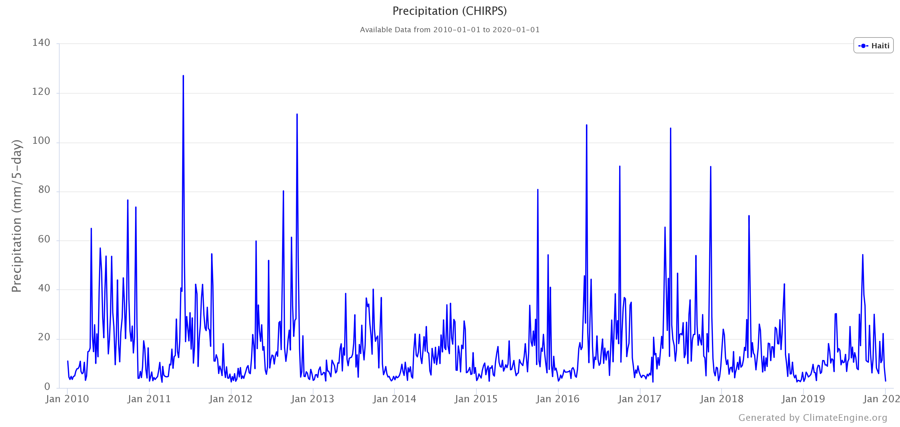

Background
- TBD
Data Sources
- TBD
Classifier
- TBD
Results
Drought
Haiti went through 3 consecutive years of drought between 2013 and 2016. This created concern for the food security in the country and also impacted ecosystems in the country. Precipitation Estimations from CHIRPS [1] shown in the next figure show disappointing rainfall levels in the country during this period. Not only did this reduce the direct input of freshwater in the mangrove through rain, the freshwater inputs from the valley also got reduced as discharges from dams were conservative to prioritize irrigation and hydropower generation.
[1] "Funk, C., Peterson, P., Landsfeld, M. et al. The climate hazards infrared precipitation with stations—a new environmental record for monitoring extremes. Sci Data 2, 150066 (2015). https://doi.org/10.1038/sdata.2015.66 "
Mangrove Cover Change
TBDdNDVI
TBDTables
TBDMiscellaneous
GitHub
The code behind this project is hosted on GitHub on the following repo: AlexandreSeb97/RSHaiti-GPBay